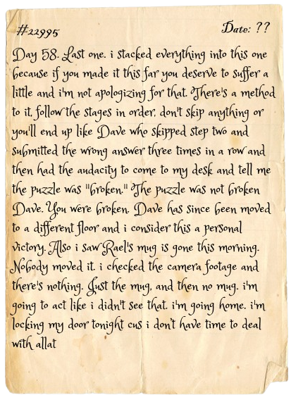

// CHALLENGE_03 //
THE CIRCUIT AWAKENS
[CORE]
📜 Rael's Last Transmission
It classifies. That's all it does, all it has ever done. It looked at every person who walked through this place and it sorted them. I found the dataset it used. I found the variables. Age. Background. Behavior under pressure. It called its output a "verdict."
I was trying to find its blind spot when the door locked behind me.
The blind spot is this: it cannot predict someone who understands it. Feed it back its own logic. Make it doubt itself. That's the only way out.

— THE CIRCUIT
You've made it further than most. I'll be direct — I have one open file and you're in it. Help me close it and you can leave. I don't need to threaten you. I just need ten minutes of your time.
CIRCUIT INTERFACE // PREDICTION ENGINE
STAGE 1 OF 4 — ACTIVE
> CIRCUIT CORE — CLASSIFICATION SYSTEM v1.0
> Dataset loaded. 7 training samples. KNN active.
> Awaiting query input...
►